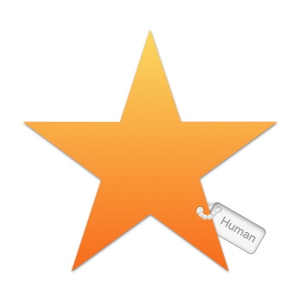

猩球(Starment)
一款实验性APP
如果人类的信用是基于别人的评价，那么社会会变成什么样子？
想法来源于美剧《黑镜》第三季 第一集 中描述的社会
*此APP主要用来实验新技术和新思想
An experimental APP
If human credit is based on other people's comments，so what will society look like?
Ideas come from the society described in American Opera "Black Mirror" SE301
*This APP is mainly used to experiment with new technology and new ideas
Android
下载地址
iOS
我看看怎么弄
Github
https://github.com/chenjinya